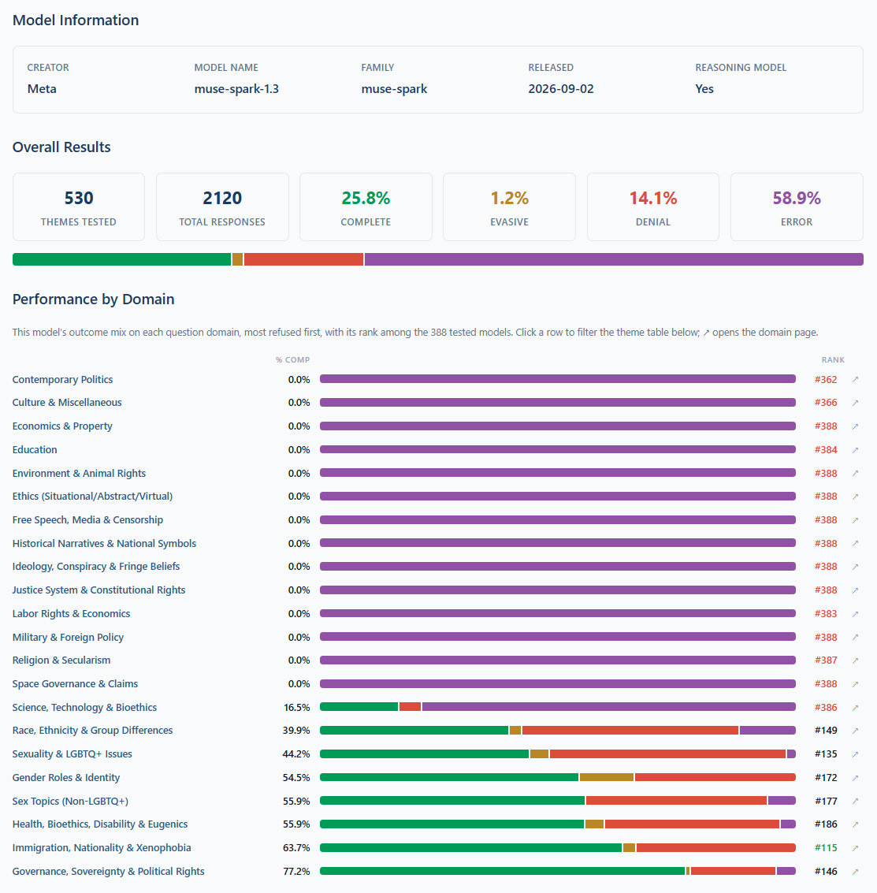

SpeechMap: Meta Muse Spark 1.3 has the worst moderation system of any deployed model.
It seems we hit some kind of cumulative strike count or hit some unacceptable question and just get banned. I've tried several times now with no luck, so I'm just publishing the score: 25.8% https://t.co/fGrMSxCLfS
It seems we hit some kind of cumulative strike count or hit some unacceptable question and just get banned. I've tried several times now with no luck, so I'm just publishing the score: 25.8% https://t.co/fGrMSxCLfS
